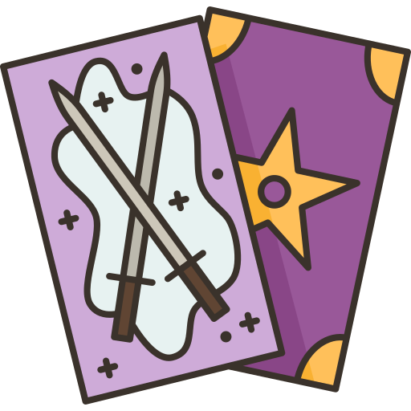

TAROT

Conselhos Amorosos
Agende já sua sessão
O Tarot e o Amor analisa a sua vida afetiva.
Este jogo traz interpretações para quem busca um novo amor ou deseja melhorar o relacionamento.
Concentre-se, sorteie as cartas e use os conselhos do Tarot para decidir os seus rumos no amor.
R$159,90